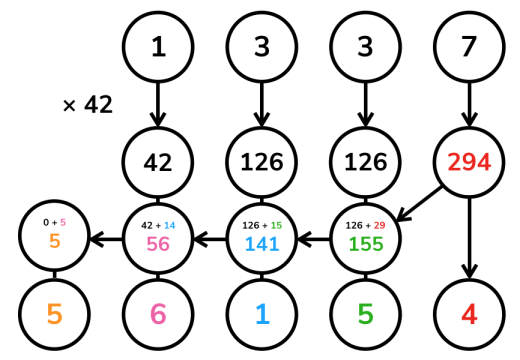

高精度计算
太长不看版：结尾自取模板……
定义
高精度计算（Arbitrary-Precision Arithmetic），也被称作大整数（bignum）计算，运用了一些算法结构来支持更大整数间的运算（数字大小超过语言内建整型）。
引入
高精度问题包含很多小的细节，实现上也有很多讲究。
所以今天就来一起实现一个简单的计算器吧。
任务
输入：一个形如 a <op> b 的表达式。
a、b分别是长度不超过的十进制非负整数； <op>是一个字符（+、-、*或/），表示运算。- 整数与运算符之间由一个空格分隔。
输出：运算结果。
- 对于
+、-、*运算，输出一行表示结果； - 对于
/运算，输出两行分别表示商和余数。 - 保证结果均为非负整数。
存储
在平常的实现中，高精度数字利用字符串表示，每一个字符表示数字的一个十进制位。因此可以说，高精度数值计算实际上是一种特别的字符串处理。
读入字符串时，数字最高位在字符串首（下标小的位置）。但是习惯上，下标最小的位置存放的是数字的 最低位，即存储反转的字符串。这么做的原因在于，数字的长度可能发生变化，但我们希望同样权值位始终保持对齐（例如，希望所有的个位都在下标 [0]，所有的十位都在下标 [1]……）；同时，加、减、乘的运算一般都从个位开始进行（回想小学的竖式运算），这都给了「反转存储」以充分的理由。
此后我们将一直沿用这一约定。定义一个常数 LEN = 1004 表示程序所容纳的最大长度。
由此不难写出读入高精度数字的代码：
void clear(int a[]) {
for (int i = 0; i < LEN; ++i) a[i] = 0;
}
void read(int a[]) {
static char s[LEN + 1];
scanf("%s", s);
clear(a);
int len = strlen(s);
// 如上所述，反转
for (int i = 0; i < len; ++i) a[len - i - 1] = s[i] - '0';
// s[i] - '0' 就是 s[i] 所表示的数码
// 有些同学可能更习惯用 ord(s[i]) - ord('0') 的方式理解
}
输出也按照存储的逆序输出。由于不希望输出前导零，故这里从最高位开始向下寻找第一个非零位，从此处开始输出；终止条件 i >= 1 而不是 i >= 0 是因为当整个数字等于 0。
void print(int a[]) {
int i;
for (i = LEN - 1; i >= 1; --i)
if (a[i] != 0) break;
for (; i >= 0; --i) putchar(a[i] + '0');
putchar('\n');
}
拼起来就是一个完整的复读机程序咯。
copycat.cpp
#include <cstdio>
#include <cstring>
constexpr int LEN = 1004;
int a[LEN];
void clear(int a[]) {
for (int i = 0; i < LEN; ++i) a[i] = 0;
}
void read(int a[]) {
static char s[LEN + 1];
scanf("%s", s);
clear(a);
int len = strlen(s);
for (int i = 0; i < len; ++i) a[len - i - 1] = s[i] - '0';
}
void print(int a[]) {
int i;
for (i = LEN - 1; i >= 1; --i)
if (a[i] != 0) break;
for (; i >= 0; --i) putchar(a[i] + '0');
putchar('\n');
}
int main() {
read(a);
print(a);
return 0;
}
四则运算
四则运算中难度也各不相同。最简单的是高精度加减法，其次是高精度—单精度（普通的 int）乘法和高精度—高精度乘法，最后是高精度—高精度除法。
我们将按这个顺序分别实现所有要求的功能。
加法
高精度加法，其实就是竖式加法啦。

也就是从最低位开始，将两个加数对应位置上的数码相加，并判断是否达到或超过
void add(int a[], int b[], int c[]) {
clear(c);
// 高精度实现中，一般令数组的最大长度 LEN 比可能的输入大一些
// 然后略去末尾的几次循环，这样一来可以省去不少边界情况的处理
// 因为实际输入不会超过 1000 位，故在此循环到 LEN - 1 = 1003 已经足够
for (int i = 0; i < LEN - 1; ++i) {
// 将相应位上的数码相加
c[i] += a[i] + b[i];
if (c[i] >= 10) {
// 进位
c[i + 1] += 1;
c[i] -= 10;
}
}
}
试着和上一部分结合，可以得到一个加法计算器。
adder.cpp
#include <cstdio>
#include <cstring>
constexpr int LEN = 1004;
int a[LEN], b[LEN], c[LEN];
void clear(int a[]) {
for (int i = 0; i < LEN; ++i) a[i] = 0;
}
void read(int a[]) {
static char s[LEN + 1];
scanf("%s", s);
clear(a);
int len = strlen(s);
for (int i = 0; i < len; ++i) a[len - i - 1] = s[i] - '0';
}
void print(int a[]) {
int i;
for (i = LEN - 1; i >= 1; --i)
if (a[i] != 0) break;
for (; i >= 0; --i) putchar(a[i] + '0');
putchar('\n');
}
void add(int a[], int b[], int c[]) {
clear(c);
for (int i = 0; i < LEN - 1; ++i) {
c[i] += a[i] + b[i];
if (c[i] >= 10) {
c[i + 1] += 1;
c[i] -= 10;
}
}
}
int main() {
read(a);
read(b);
add(a, b, c);
print(c);
return 0;
}
减法
高精度减法，也就是竖式减法啦。

从个位起逐位相减，遇到负的情况则向上一位借
void sub(int a[], int b[], int c[]) {
clear(c);
for (int i = 0; i < LEN - 1; ++i) {
// 逐位相减
c[i] += a[i] - b[i];
if (c[i] < 0) {
// 借位
c[i + 1] -= 1;
c[i] += 10;
}
}
}
将上一个程序中的 add() 替换成 sub()，就有了一个减法计算器。
subtractor.cpp
#include <cstdio>
#include <cstring>
constexpr int LEN = 1004;
int a[LEN], b[LEN], c[LEN];
void clear(int a[]) {
for (int i = 0; i < LEN; ++i) a[i] = 0;
}
void read(int a[]) {
static char s[LEN + 1];
scanf("%s", s);
clear(a);
int len = strlen(s);
for (int i = 0; i < len; ++i) a[len - i - 1] = s[i] - '0';
}
void print(int a[]) {
int i;
for (i = LEN - 1; i >= 1; --i)
if (a[i] != 0) break;
for (; i >= 0; --i) putchar(a[i] + '0');
putchar('\n');
}
void sub(int a[], int b[], int c[]) {
clear(c);
for (int i = 0; i < LEN - 1; ++i) {
c[i] += a[i] - b[i];
if (c[i] < 0) {
c[i + 1] -= 1;
c[i] += 10;
}
}
}
int main() {
read(a);
read(b);
sub(a, b, c);
print(c);
return 0;
}
试一试，输入 1 2——输出 /9999999，诶这个 OI Wiki 怎么给了我一份假的代码啊……
事实上，上面的代码只能处理减数
要计算 sub 函数，写法为 sub(b,a,c)。要得到
乘法
高精度—单精度
高精度乘法，也就是竖……等会儿等会儿！
先考虑一个简单的情况：乘数中的一个是普通的 int 类型。有没有简单的处理方法呢？
一个直观的思路是直接将
重整的方式，也是从个位开始逐位向上处理进位。但是这里的进位可能非常大，甚至远大于

当然，也是出于这个原因，这个方法需要特别关注乘数
void mul_short(int a[], int b, int c[]) {
clear(c);
for (int i = 0; i < LEN - 1; ++i) {
// 直接把 a 的第 i 位数码乘以乘数，加入结果
c[i] += a[i] * b;
if (c[i] >= 10) {
// 处理进位
// c[i] / 10 即除法的商数成为进位的增量值
c[i + 1] += c[i] / 10;
// 而 c[i] % 10 即除法的余数成为在当前位留下的值
c[i] %= 10;
}
}
}
高精度—高精度
如果两个乘数都是高精度，那么竖式乘法又可以大显身手了。
回想竖式乘法的每一步，实际上是计算了若干
于是可以将

注意这个过程与竖式乘法不尽相同，我们的算法在每一步乘的过程中并不进位，而是将所有的结果保留在对应的位置上，到最后再统一处理进位，但这不会影响结果。
void mul(int a[], int b[], int c[]) {
clear(c);
for (int i = 0; i < LEN - 1; ++i) {
// 这里直接计算结果中的从低到高第 i 位，且一并处理了进位
// 第 i 次循环为 c[i] 加上了所有满足 p + q = i 的 a[p] 与 b[q] 的乘积之和
// 这样做的效果和直接进行上图的运算最后求和是一样的，只是更加简短的一种实现方式
for (int j = 0; j <= i; ++j) c[i] += a[j] * b[i - j];
if (c[i] >= 10) {
c[i + 1] += c[i] / 10;
c[i] %= 10;
}
}
}
除法
高精度除法的一种实现方式就是竖式长除法。

竖式长除法实际上可以看作一个逐次减法的过程。例如上图中商数十位的计算可以这样理解：将
为了减少冗余运算，我们提前得到被除数的长度
参考程序实现了一个函数 greater_eq() 用于判断被除数以下标 last_dg 为最低位，是否可以再减去除数而保持非负。此后对于商的每一位，不断调用 greater_eq()，并在成立的时候用高精度减法从余数中减去除数，也即模拟了竖式除法的过程。
// 被除数 a 以下标 last_dg 为最低位，是否可以再减去除数 b 而保持非负
// len 是除数 b 的长度，避免反复计算
bool greater_eq(int a[], int b[], int last_dg, int len) {
// 有可能被除数剩余的部分比除数长，这个情况下最多多出 1 位，故如此判断即可
if (a[last_dg + len] != 0) return true;
// 从高位到低位，逐位比较
for (int i = len - 1; i >= 0; --i) {
if (a[last_dg + i] > b[i]) return true;
if (a[last_dg + i] < b[i]) return false;
}
// 相等的情形下也是可行的
return true;
}
void div(int a[], int b[], int c[], int d[]) {
clear(c);
clear(d);
int la, lb;
for (la = LEN - 1; la > 0; --la)
if (a[la - 1] != 0) break;
for (lb = LEN - 1; lb > 0; --lb)
if (b[lb - 1] != 0) break;
if (lb == 0) { // 除数不能为零
puts("> <");
return;
}
// c 是商
// d 是被除数的剩余部分，算法结束后自然成为余数
for (int i = 0; i < la; ++i) d[i] = a[i];
for (int i = la - lb; i >= 0; --i) {
// 计算商的第 i 位
while (greater_eq(d, b, i, lb)) {
// 若可以减，则减
// 这一段是一个高精度减法
for (int j = 0; j < lb; ++j) {
d[i + j] -= b[j];
if (d[i + j] < 0) {
d[i + j + 1] -= 1;
d[i + j] += 10;
}
}
// 使商的这一位增加 1
c[i] += 1;
// 返回循环开头，重新检查
}
}
}
入门篇完成！
将上面介绍的四则运算的实现结合，即可完成开头提到的计算器程序。
calculator.cpp
#include <cstdio>
#include <cstring>
constexpr int LEN = 1004;
int a[LEN], b[LEN], c[LEN], d[LEN];
void clear(int a[]) {
for (int i = 0; i < LEN; ++i) a[i] = 0;
}
void read(int a[]) {
static char s[LEN + 1];
scanf("%s", s);
clear(a);
int len = strlen(s);
for (int i = 0; i < len; ++i) a[len - i - 1] = s[i] - '0';
}
void print(int a[]) {
int i;
for (i = LEN - 1; i >= 1; --i)
if (a[i] != 0) break;
for (; i >= 0; --i) putchar(a[i] + '0');
putchar('\n');
}
void add(int a[], int b[], int c[]) {
clear(c);
for (int i = 0; i < LEN - 1; ++i) {
c[i] += a[i] + b[i];
if (c[i] >= 10) {
c[i + 1] += 1;
c[i] -= 10;
}
}
}
void sub(int a[], int b[], int c[]) {
clear(c);
for (int i = 0; i < LEN - 1; ++i) {
c[i] += a[i] - b[i];
if (c[i] < 0) {
c[i + 1] -= 1;
c[i] += 10;
}
}
}
void mul(int a[], int b[], int c[]) {
clear(c);
for (int i = 0; i < LEN - 1; ++i) {
for (int j = 0; j <= i; ++j) c[i] += a[j] * b[i - j];
if (c[i] >= 10) {
c[i + 1] += c[i] / 10;
c[i] %= 10;
}
}
}
bool greater_eq(int a[], int b[], int last_dg, int len) {
if (a[last_dg + len] != 0) return true;
for (int i = len - 1; i >= 0; --i) {
if (a[last_dg + i] > b[i]) return true;
if (a[last_dg + i] < b[i]) return false;
}
return true;
}
void div(int a[], int b[], int c[], int d[]) {
clear(c);
clear(d);
int la, lb;
for (la = LEN - 1; la > 0; --la)
if (a[la - 1] != 0) break;
for (lb = LEN - 1; lb > 0; --lb)
if (b[lb - 1] != 0) break;
if (lb == 0) {
puts("> <");
return;
}
for (int i = 0; i < la; ++i) d[i] = a[i];
for (int i = la - lb; i >= 0; --i) {
while (greater_eq(d, b, i, lb)) {
for (int j = 0; j < lb; ++j) {
d[i + j] -= b[j];
if (d[i + j] < 0) {
d[i + j + 1] -= 1;
d[i + j] += 10;
}
}
c[i] += 1;
}
}
}
int main() {
read(a);
char op[4];
scanf("%s", op);
read(b);
switch (op[0]) {
case '+':
add(a, b, c);
print(c);
break;
case '-':
sub(a, b, c);
print(c);
break;
case '*':
mul(a, b, c);
print(c);
break;
case '/':
div(a, b, c, d);
print(c);
print(d);
break;
default:
puts("> <");
}
return 0;
}
压位高精度
引入
在一般的高精度加法，减法，乘法运算中，我们都是将参与运算的数拆分成一个个单独的数码进行运算。
例如计算
在位数较多的时候，拆分出的数也很多，高精度运算的效率就会下降。
有没有办法作出一些优化呢？
注意到拆分数字的方式并不影响最终的结果，因此我们可以将若干个数码进行合并。
过程
还是以上面这个例子为例，如果我们每两位拆分一个数，我们可以拆分成
这样的拆分不影响最终结果，但是因为拆分出的数字变少了，计算效率也就提升了。
从 进位制 的角度理解这一过程，我们通过在较大的进位制（上面每两位拆分一个数，可以认为是在
这就是 压位高精度 的思想。
下面我们给出压位高精度的加法代码，用于进一步阐述其实现方法：
压位高精度加法参考实现
压位高精下的高效竖式除法
在使用压位高精时，如果试商时仍然使用上文介绍的方法，由于试商次数会很多，计算常数会非常大。例如在万进制下，平均每个位需要试商 5000 次，这个巨大的常数是不可接受的。因此我们需要一个更高效的试商办法。
我们可以把 double 作为媒介。假设被除数有 4 位，是
另外，由于估的商总是小于等于实际商，所以还有再进一步优化的空间。绝大多数情况下每个位只估商一次，这样在下一个位估商时，虽然得到的商有可能因为前一位的误差造成试商结果大于等于 base，但这没有关系，只要在最后做统一进位便可。举个例子，假设 base 是 10，求
- 首先试商计算得到
，于是 ，这一步出现了误差，但不用管，继续下一步计算。 - 对余数 98801 继续试商计算得到
，于是 ，这就是最终余数。 - 把试商过程的结果加起来并处理进位，即
便是准确的商。
方法虽然看着简单，但具体实现上很容易进坑，所以以下提供一个经过多番验证确认没有问题的实现供大家参考，要注意的细节也写在注释当中。
压位高精度高效竖式除法参考实现
// 完整模板和实现 https://baobaobear.github.io/post/20210228-bigint1/
// 对b乘以mul再左移offset的结果相减，为除法服务
BigIntSimple &sub_mul(const BigIntSimple &b, int mul, int offset) {
if (mul == 0) return *this;
int borrow = 0;
// 与减法不同的是，borrow可能很大，不能使用减法的写法
for (size_t i = 0; i < b.v.size(); ++i) {
borrow += v[i + offset] - b.v[i] * mul - BIGINT_BASE + 1;
v[i + offset] = borrow % BIGINT_BASE + BIGINT_BASE - 1;
borrow /= BIGINT_BASE;
}
// 如果还有借位就继续处理
for (size_t i = b.v.size(); borrow; ++i) {
borrow += v[i + offset] - BIGINT_BASE + 1;
v[i + offset] = borrow % BIGINT_BASE + BIGINT_BASE - 1;
borrow /= BIGINT_BASE;
}
return *this;
}
BigIntSimple div_mod(const BigIntSimple &b, BigIntSimple &r) const {
BigIntSimple d;
r = *this;
if (absless(b)) return d;
d.v.resize(v.size() - b.v.size() + 1);
// 提前算好除数的最高三位+1的倒数，若最高三位是a3,a2,a1
// 那么db是a3+a2/base+(a1+1)/base^2的倒数，最后用乘法估商的每一位
// 此法在BIGINT_BASE<=32768时可在int32范围内用
// 但即使使用int64，那么也只有BIGINT_BASE<=131072时可用（受double的精度限制）
// 能保证估计结果q'与实际结果q的关系满足q'<=q<=q'+1
// 所以每一位的试商平均只需要一次，只要后面再统一处理进位即可
// 如果要使用更大的base，那么需要更换其它试商方案
double t = (b.get((unsigned)b.v.size() - 2) +
(b.get((unsigned)b.v.size() - 3) + 1.0) / BIGINT_BASE);
double db = 1.0 / (b.v.back() + t / BIGINT_BASE);
for (size_t i = v.size() - 1, j = d.v.size() - 1; j <= v.size();) {
int rm = r.get(i + 1) * BIGINT_BASE + r.get(i);
int m = std::max((int)(db * rm), r.get(i + 1));
r.sub_mul(b, m, j);
d.v[j] += m;
if (!r.get(i + 1)) // 检查最高位是否已为0，避免极端情况
--i, --j;
}
r.trim();
// 修正结果的个位
int carry = 0;
while (!r.absless(b)) {
r.subtract(b);
++carry;
}
// 修正每一位的进位
for (size_t i = 0; i < d.v.size(); ++i) {
carry += d.v[i];
d.v[i] = carry % BIGINT_BASE;
carry /= BIGINT_BASE;
}
d.trim();
d.sign = sign * b.sign;
return d;
}
BigIntSimple operator/(const BigIntSimple &b) const {
BigIntSimple r;
return div_mod(b, r);
}
BigIntSimple operator%(const BigIntSimple &b) const {
BigIntSimple r;
div_mod(b, r);
return r;
}
Karatsuba 乘法
记高精度数字的位数为
考虑两个十进制大整数
其中
观察知
于是要计算
上式实际上是 Karatsuba 算法的核心，它将长度为
整个过程可以递归实现。为清晰起见，下面的代码通过 Karatsuba 算法实现了多项式乘法，最后再处理所有的进位问题。
karatsuba_mulc.cpp
int *karatsuba_polymul(int n, int *a, int *b) {
if (n <= 32) {
// 规模较小时直接计算，避免继续递归带来的效率损失
int *r = new int[n * 2 + 1]();
for (int i = 0; i <= n; ++i)
for (int j = 0; j <= n; ++j) r[i + j] += a[i] * b[j];
return r;
}
int m = n / 2 + 1;
int *r = new int[m * 4 + 1]();
int *z0, *z1, *z2;
z0 = karatsuba_polymul(m - 1, a, b);
z2 = karatsuba_polymul(n - m, a + m, b + m);
// 计算 z1
// 临时更改，计算完毕后恢复
for (int i = 0; i + m <= n; ++i) a[i] += a[i + m];
for (int i = 0; i + m <= n; ++i) b[i] += b[i + m];
z1 = karatsuba_polymul(m - 1, a, b);
for (int i = 0; i + m <= n; ++i) a[i] -= a[i + m];
for (int i = 0; i + m <= n; ++i) b[i] -= b[i + m];
for (int i = 0; i <= (m - 1) * 2; ++i) z1[i] -= z0[i];
for (int i = 0; i <= (n - m) * 2; ++i) z1[i] -= z2[i];
// 由 z0、z1、z2 组合获得结果
for (int i = 0; i <= (m - 1) * 2; ++i) r[i] += z0[i];
for (int i = 0; i <= (m - 1) * 2; ++i) r[i + m] += z1[i];
for (int i = 0; i <= (n - m) * 2; ++i) r[i + m * 2] += z2[i];
delete[] z0;
delete[] z1;
delete[] z2;
return r;
}
void karatsuba_mul(int a[], int b[], int c[]) {
int *r = karatsuba_polymul(LEN - 1, a, b);
memcpy(c, r, sizeof(int) * LEN);
for (int i = 0; i < LEN - 1; ++i)
if (c[i] >= 10) {
c[i + 1] += c[i] / 10;
c[i] %= 10;
}
delete[] r;
}
关于 new 和 delete
见 内存池。
但是这样的实现存在一个问题：在
基于多项式的高效大整数乘法
如果数据规模达到了
对于一个
普通的多项式乘法时间复杂度仍是
封装类
这里 有一个封装好的高精度整数类，以及 这里 支持动态长度及四则运算的超迷你实现类。
这里是另一个模板
constexpr int MAXN = 9999;
// MAXN 是一位中最大的数字
constexpr int MAXSIZE = 10024;
// MAXSIZE 是位数
constexpr int DLEN = 4;
// DLEN 记录压几位
struct Big {
int a[MAXSIZE], len;
bool flag; // 标记符号'-'
Big() {
len = 1;
memset(a, 0, sizeof a);
flag = false;
}
Big(const int);
Big(const char*);
Big(const Big&);
Big& operator=(const Big&);
Big operator+(const Big&) const;
Big operator-(const Big&) const;
Big operator*(const Big&) const;
Big operator/(const int&) const;
// TODO: Big / Big;
Big operator^(const int&) const;
// TODO: Big ^ Big;
// TODO: Big 位运算;
int operator%(const int&) const;
// TODO: Big ^ Big;
bool operator<(const Big&) const;
bool operator<(const int& t) const;
void print() const;
};
Big::Big(const int b) {
int c, d = b;
len = 0;
// memset(a,0,sizeof a);
CLR(a);
while (d > MAXN) {
c = d - (d / (MAXN + 1) * (MAXN + 1));
d = d / (MAXN + 1);
a[len++] = c;
}
a[len++] = d;
}
Big::Big(const char* s) {
int t, k, index, l;
CLR(a);
l = strlen(s);
len = l / DLEN;
if (l % DLEN) ++len;
index = 0;
for (int i = l - 1; i >= 0; i -= DLEN) {
t = 0;
k = i - DLEN + 1;
if (k < 0) k = 0;
g(j, k, i) t = t * 10 + s[j] - '0';
a[index++] = t;
}
}
Big::Big(const Big& T) : len(T.len) {
CLR(a);
f(i, 0, len) a[i] = T.a[i];
// TODO:重载此处？
}
Big& Big::operator=(const Big& T) {
CLR(a);
len = T.len;
f(i, 0, len) a[i] = T.a[i];
return *this;
}
Big Big::operator+(const Big& T) const {
Big t(*this);
int big = len;
if (T.len > len) big = T.len;
f(i, 0, big) {
t.a[i] += T.a[i];
if (t.a[i] > MAXN) {
++t.a[i + 1];
t.a[i] -= MAXN + 1;
}
}
if (t.a[big])
t.len = big + 1;
else
t.len = big;
return t;
}
Big Big::operator-(const Big& T) const {
int big;
bool ctf;
Big t1, t2;
if (*this < T) {
t1 = T;
t2 = *this;
ctf = true;
} else {
t1 = *this;
t2 = T;
ctf = false;
}
big = t1.len;
int j = 0;
f(i, 0, big) {
if (t1.a[i] < t2.a[i]) {
j = i + 1;
while (t1.a[j] == 0) ++j;
--t1.a[j--];
// WTF?
while (j > i) t1.a[j--] += MAXN;
t1.a[i] += MAXN + 1 - t2.a[i];
} else
t1.a[i] -= t2.a[i];
}
t1.len = big;
while (t1.len > 1 && t1.a[t1.len - 1] == 0) {
--t1.len;
--big;
}
if (ctf) t1.a[big - 1] = -t1.a[big - 1];
return t1;
}
Big Big::operator*(const Big& T) const {
Big res;
int up;
int te, tee;
f(i, 0, len) {
up = 0;
f(j, 0, T.len) {
te = a[i] * T.a[j] + res.a[i + j] + up;
if (te > MAXN) {
tee = te - te / (MAXN + 1) * (MAXN + 1);
up = te / (MAXN + 1);
res.a[i + j] = tee;
} else {
up = 0;
res.a[i + j] = te;
}
}
if (up) res.a[i + T.len] = up;
}
res.len = len + T.len;
while (res.len > 1 && res.a[res.len - 1] == 0) --res.len;
return res;
}
Big Big::operator/(const int& b) const {
Big res;
int down = 0;
gd(i, len - 1, 0) {
res.a[i] = (a[i] + down * (MAXN + 1)) / b;
down = a[i] + down * (MAXN + 1) - res.a[i] * b;
}
res.len = len;
while (res.len > 1 && res.a[res.len - 1] == 0) --res.len;
return res;
}
int Big::operator%(const int& b) const {
int d = 0;
gd(i, len - 1, 0) d = (d * (MAXN + 1) % b + a[i]) % b;
return d;
}
Big Big::operator^(const int& n) const {
Big t(n), res(1);
int y = n;
while (y) {
if (y & 1) res = res * t;
t = t * t;
y >>= 1;
}
return res;
}
bool Big::operator<(const Big& T) const {
int ln;
if (len < T.len) return true;
if (len == T.len) {
ln = len - 1;
while (ln >= 0 && a[ln] == T.a[ln]) --ln;
if (ln >= 0 && a[ln] < T.a[ln]) return true;
return false;
}
return false;
}
bool Big::operator<(const int& t) const {
Big tee(t);
return *this < tee;
}
void Big::print() const {
printf("%d", a[len - 1]);
gd(i, len - 2, 0) { printf("%04d", a[i]); }
}
void print(const Big& s) {
int len = s.len;
printf("%d", s.a[len - 1]);
gd(i, len - 2, 0) { printf("%04d", s.a[i]); }
}
char s[100024];
习题
- NOIP 2012 国王游戏
- SPOJ - Fast Multiplication
- SPOJ - GCD2
- UVa - Division
- UVa - Fibonacci Freeze
- Codeforces - Notepad
参考资料与链接
创建日期: 2018年8月15日